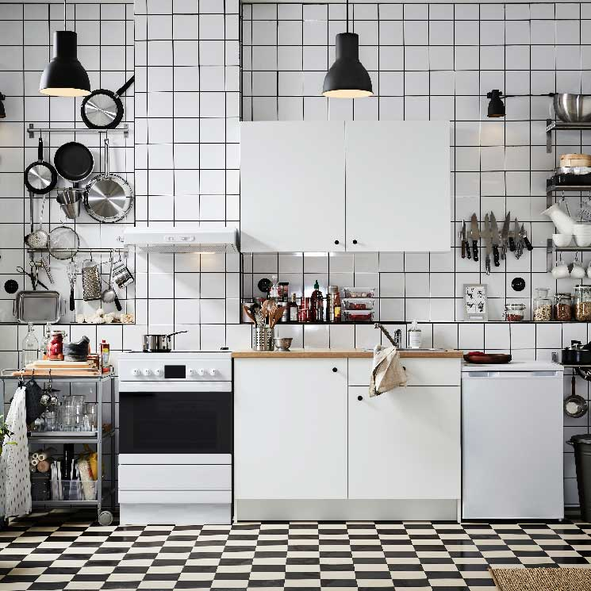

Ponte el delantal y descubre el mas allá

¡Hagamos de la cocina un espacio para todos!
¿Qué nos pasa con la cocina? A veces le tomamos una idea que nos detiene, sentimos que no somos lo sufientemente capaces para ponernos manos a la obra. Le tenemos un cierto respeto, que no esta del todo mal, mientras que esta no nos detenga sino que nos aliente a hacer de nuestra receta algo unico. Hagamos de la cocina un espacio en donde te encuentres con vos mismo, y que en tus creaciones dejes siempre tu huella.Es tu lugar, es tu momento